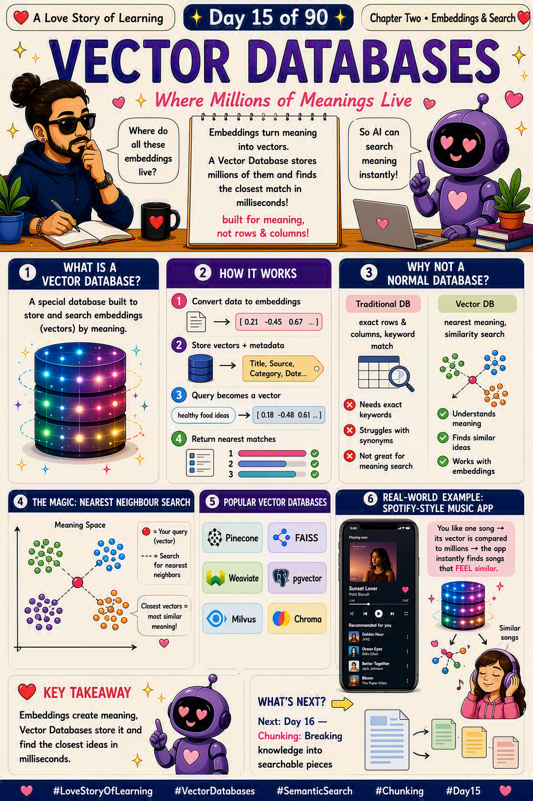

📜 The 30-second brief
In Note 11 we turned meaning into numbers (embeddings). In Note 13 we chose meaning over spelling (vector search). But one question remained: where do all these millions of vectors actually live? The answer is a Vector Database — a special store built to hold embeddings and search them by meaning.
A normal database is built for exact rows and columns — "find the customer with ID 4471." A vector database is built for similarity — "find the ideas closest in meaning to this one." It stores the vectors and their metadata, then finds the nearest matches in milliseconds, even across billions of items. 💕
💌 A fresh analogy: the city directory of minds
Imagine a huge city where every person has a "home address" based on how they think (that's their embedding). Now imagine a giant directory that stores every one of those addresses and can, in an instant, tell you "here are the ten people who think most like you."
That directory is the vector database. It doesn't flip through names one by one — it's organised so that similar minds are easy to reach. Ask it a question and it hands you the nearest neighbours before you've finished blinking. 🏙️
🔍 What a vector database actually does
| Step | What happens |
|---|---|
| 1 · Convert data to embeddings | Documents, songs, images or text are turned into vectors. |
| 2 · Store vectors + metadata | Each vector is saved with tags like title, source, category, date. |
| 3 · Query becomes a vector | Your search is embedded with the same model. |
| 4 · Return nearest matches | It finds and ranks the closest vectors by meaning. |
The metadata matters: it lets you combine meaning ("songs like this one") with filters ("…released after 2020, in English"). That mix is what makes it production-ready.
⚙️ Why not just use a normal database?
| 🗃️ Traditional DB | 🧭 Vector DB | |
|---|---|---|
| Searches by | Exact rows & columns, keyword match. | Nearest meaning, similarity search. |
| Synonyms | ❌ Struggles — needs exact keywords. | ✅ Understands meaning. |
| "Find similar" | ❌ Not great for meaning search. | ✅ Finds similar ideas. |
| Works with embeddings | ❌ Not designed for it. | ✅ Built exactly for it. |
They're not enemies — many real systems use both: a traditional DB for exact records, a vector DB for meaning-based search.
🧵 Where the vector database sits among its look-alikes
Embeddings, semantic search, vector search, cosine similarity, vector databases — they blur together until each gets a clear job. Same city story: you move to a huge new city and want to find people who think like you.
| Concept | Its role in the story | In one line |
|---|---|---|
| 🧭 Embeddings (Note 11) | Every person gets a "home address" based on how they think. | Turn meaning into location. |
| 🔍 Vector Search (Note 13) | Walking the city to reach the nearest like-minded people. | Find by meaning. |
| 📐 Cosine Similarity (Note 14) | The ruler that decides who counts as "near." | The measure of nearness. |
| 🗄️ Vector Database (Note 15 · today) | The giant directory storing every address for instant lookup. | The home for the vectors. |
| ✂️ Chunking (Note 16) | Cutting big documents into bite-size pieces before they move in. | Prepare data to be stored. |
The through-line: Embeddings build the map, vector search does the finding, cosine similarity is the ruler, and the vector database is the home that makes it all fast at scale. It's the place where the whole chapter finally comes together. 💗
✨ The magic: nearest-neighbour search at scale
In "meaning space," similar ideas cluster together — songs about heartbreak here, workout anthems there. Your query is one point, and the database finds the points closest to it.
- Exact search (kNN) — checks every vector, perfect but slow at scale.
- Approximate search (ANN) — smart indexes (HNSW, IVF) that find almost the best matches, far faster.
- The trade-off — a tiny drop in accuracy for a massive gain in speed. That's how it searches millions in milliseconds.
🎵 Real-world example: your music app's "songs like this"
You tap the ❤️ on one song you love. Behind the scenes, that song has a vector — a fingerprint of its mood, tempo, and feel. The app sends that vector to a vector database holding millions of other songs.
In milliseconds, it finds the tracks whose vectors sit closest to yours and drops them into "Recommended for you." It never matched the song's title — it matched how the music feels. That's the exact same engine behind "similar products," "related tickets," and RAG retrieval over your own runbooks. 🎧
🛡️ Practical tips (so it behaves)
- Store rich metadata. Tags like source, date and category let you filter alongside similarity.
- Same embedding model for stored data and queries, or the geometry breaks.
- Pick the right index. HNSW for a great speed/recall balance; flat/exact for small datasets.
- Choose your metric. Cosine for text/meaning; match it to how your embeddings were trained.
- Plan for updates. Decide how you'll add, refresh and delete vectors as your data changes.
⚠️ Common misconceptions
- "A vector DB replaces my normal database." No — they solve different jobs and often work together.
- "It stores the actual text/song." Mostly it stores the vector plus metadata; the raw item usually lives elsewhere.
- "It understands language by itself." No — the embeddings carry meaning; the DB just stores and searches them.
- "It compares against every vector." No — ANN indexes avoid that at scale.
- "Bigger index = always better." No — indexing choices are a speed/accuracy/memory trade-off.
🎓 Quick self-test (exam-style)
- What is a vector database built for?
Storing embeddings and searching them by meaning (similarity). - How is it different from a traditional database?
Traditional matches exact rows/keywords; vector DB finds nearest meaning. - What does it store besides the vector?
Metadata (title, source, category, date) for filtering. - How does it stay fast at scale?
Approximate Nearest Neighbour (ANN) indexes like HNSW/IVF. - Name a real use case.
Music/product recommendations, semantic search, or RAG retrieval.
📚 Key terms to carry forward
- Vector database — a store built to hold and search embeddings by similarity.
- Metadata — extra tags stored with a vector for filtering.
- ANN — Approximate Nearest Neighbour; fast, near-perfect search at scale.
- Index (HNSW / IVF) — the structure that makes fast search possible.
- Popular tools — Pinecone, Weaviate, Milvus, FAISS, pgvector, Chroma.
⚡ 60-second flashcard (last look before the exam)
| Define it in one breath | A memory store built to search meaning, not rows and columns. |
| The mental model | A city directory that finds the minds most like yours instantly. |
| What it stores | Vectors + metadata. |
| Fast at scale via | ANN indexes (HNSW, IVF). |
| Nearness measured by | Note 14 · Cosine Similarity. |
| Vectors come from | Note 11 · Embeddings. |
| The finding is | Note 13 · Vector Search. |
| Popular tools | Pinecone · Weaviate · Milvus · FAISS · pgvector · Chroma. |
| Everyday uses | Recommendations · semantic search · RAG. |
| Interview line | "A vector database stores embeddings and retrieves the nearest ones by similarity at scale." |
🖼️ Today's cheat sheet
The same image shared on the LinkedIn post for Note 15.

✨ Next spark
Our vectors now have a home — but before big documents can move in, they need to be cut into the right size pieces. Too big and the meaning blurs; too small and the context is lost. That's where Note 16 · Chunking takes us — the art of breaking knowledge into searchable pieces. 💕